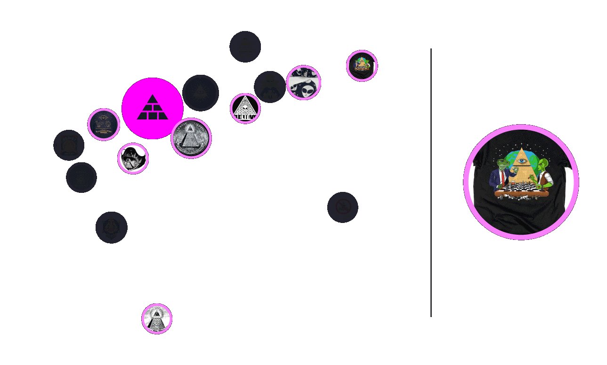
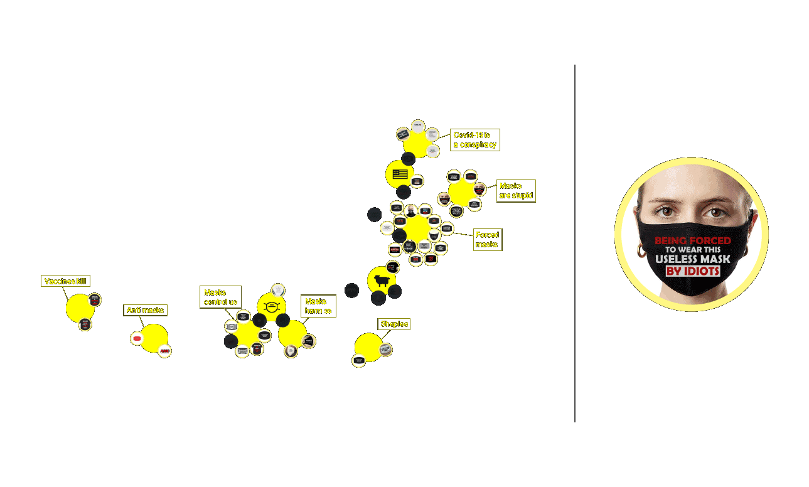

To analyse the general visual of each conspiracy theory is useful to study their configuration within the visualization. The Deep state and Pizzagate gadgets are often connected to 2 or more clusters, this means that their graphics usually result from a mix of often different elements. On the other hand, Reptilians and No mask gadgets are usually linked to no more than 2 clusters, meaning that the gadgets of the two conspiracy theories usually show specific single elements or concepts.

A great part of links connect the Deep State conspiracy theory and the Reptilians one. It is interesting to notice that these links mainly rely on some figurative elements that combine with each other: pyramid and illuminati eye for Deep State, aliens and reptilians illustrations for Reptilians.
Analysing the gadgets belonging to the “pyramid” cluster from the Deep state conspiracy theory, we noticed that in 13 gadgets out of 14 the pyramid is associated with the illustration of the illuminati eye. In 7 of them the illuminati eye is placed on the tip of the pyramid which is detached from the rest of the constructions, while in the rest of the gadgets the pyramid pattern is used to fill the triangle composing the symbol of the illuminati eye.
Analysing the “heart” cluster from Pizzagate, it is interesting to notice how the heart illustration is associated to other elements in some recurrent ways. Among the 18 gadgets belonging to this cluster, 9 of them show the heart as a little illustration under the rainbow. While when it is associated with either the “round dance” or “hand” drawings, the heart is usually placed at the center of one of the two elements just mentioned.
Among the 4 conspiracy theories, the most part of Pizzagate, Deep state and Reptilians clusters feature figurative content. Differently, within No mask conspiracy theory, 9 clusters out of 11 refer to textual content: it is therefore interesting to notice how this conspiracy theory mainly translates its concepts into slogans rather than images or icons.
Analysing the No mask conspiracy theory gadgets, we can identify the use of 3 main colors: black, white and red. The latter, in particular, is used to highlight words such as “forced, mask, vaccines,control, death”. In this way some specific concepts stand out.
